Plus de rond : une petite flèche collée au titre, de la hauteur d'une minuscule, posée sur la ligne comme une lettre. Le titre entier reste la zone à toucher.
Comme Apple Music et l'app TV : présente sans voler le regard au titre.
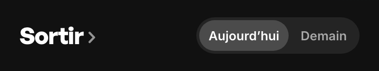
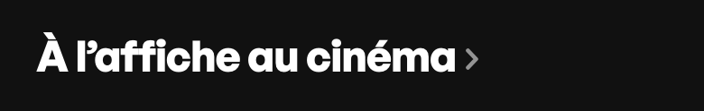
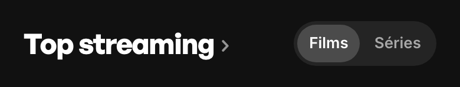
Plus franche ; elle fait corps avec le titre et l'alourdit un peu.
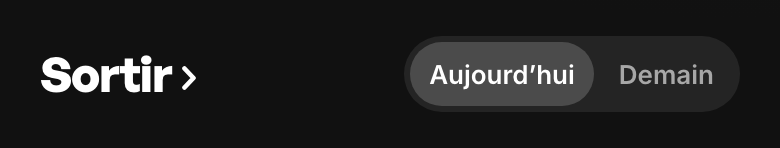
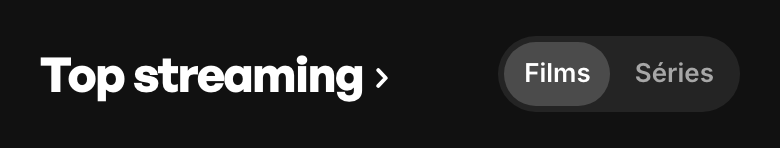
La marque sur chaque titre : neuf fois dans la page, l'œil s'y accroche.
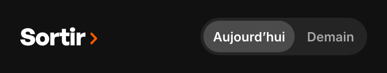
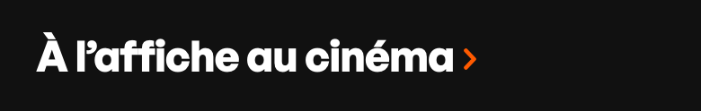
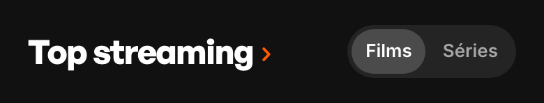
✓ Juste : centrée sur la bande des minuscules, là où l'œil lit la ligne.
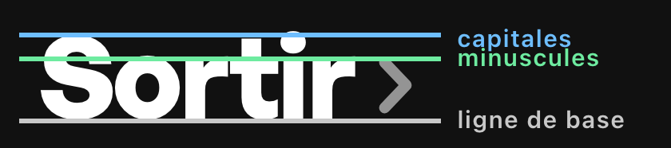
✗ Trop haute : centrée sur les capitales, le défaut de la première version.
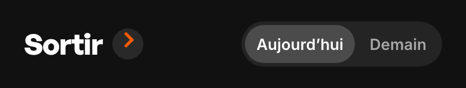
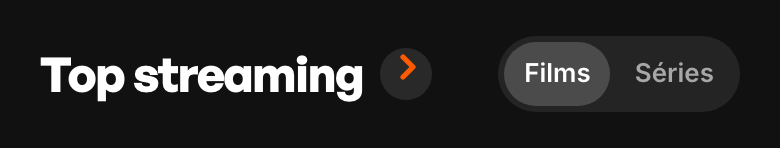